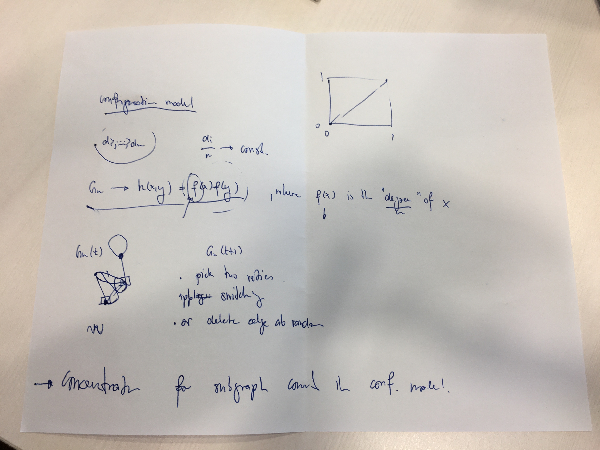
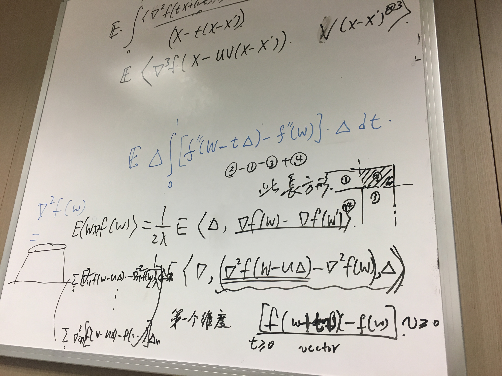

- 昨晚睡觉时间：12:00
- 起床时间：7:45
- 到办公室时间：8:30
今天坐公交去办公室，事实证明，会堵车。尤其是刚错过一班车，就要等10分钟。
早上考虑方老师的问题，我觉得题目有点问题。
下午考虑Roellin的问题，还是没有太多头绪。

晚上考虑一个多维Berry--Esseen bound的问题。凸集还是很难考虑。称 \(f(x):\mathbb{R}^d \mapsto \mathbb{R}\) 是增的： \[ \langle f(x) - f(y), x - y \rangle \geq 0. \] 希望做到：对于任意的一个\(i\), \(f(w)\)是 Stein 方程的解，
\[ \nabla_i f(w) \]
是增的。
